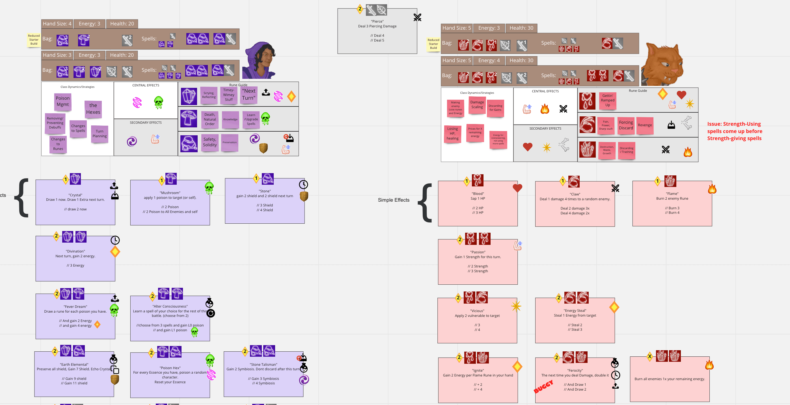
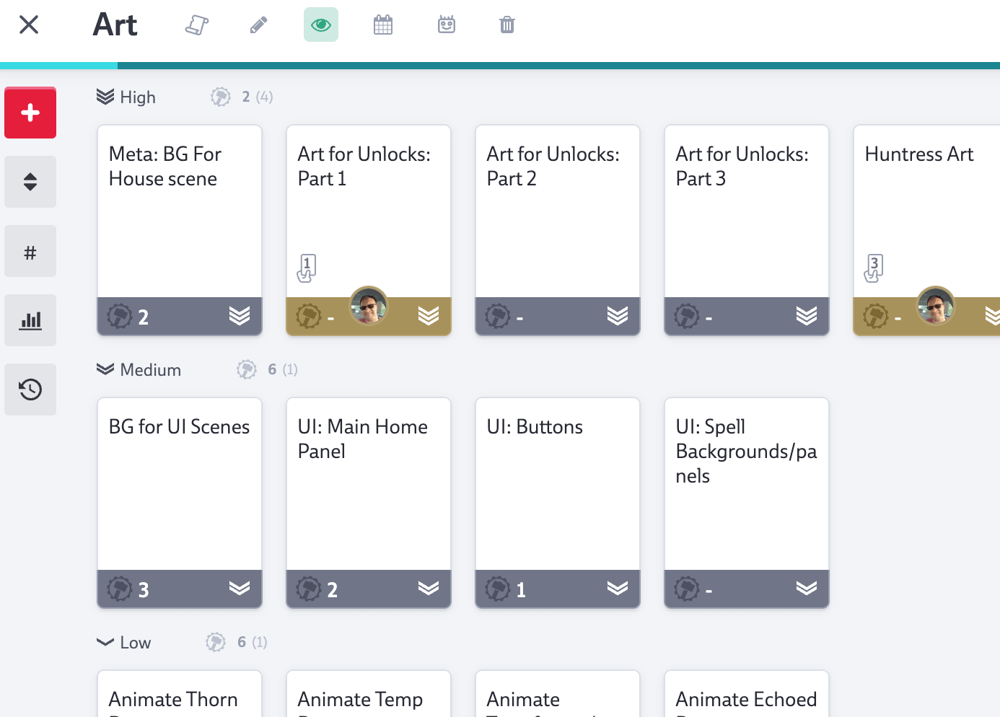

Game / Unity
Spelly Forest
A roguelike deck-building prototype with spell combinations, magical runes, and a forest full of mushrooms.

Project overview
The largest game project I've worked on! I did nearly everything myself: ideation, prototyping, engineering, design, and PR. I became much more experienced with Unity, and learned many lessons about game development in general.
Tools Unity, C#, Discord, VS Code, Git/Github, Codecks, Miro, GameTester.gg.
Iteration

- I distributed new builds every two-to-four weeks. This tight feedback loop allowed for valuable experimentation and exploration. Some core game dynamics have been altered, scrapped, and tweaked so much that they don't resemble anything like their originals!
- Using a live whiteboarding tool helped me track all these changes and share sketches of ideas with collaborators.
- A progress log and links to play the WebGL build of the game were updated on the landing page I created for the game.
- All changes were version-controlled using git, allowing me to rollback to any point in the project history and separate development efforts with feature branches.
- I tried to build everything with refactorability in mind. It is hard to find a good middle ground between unmaintainable throwaway code and needlessly over-engineering. Finding this balance is something I'm still getting better at! I've found that the "simplest abstraction possible" approach is helpful.
Prioritization

- From my years in software agencies, I've tried loads of project management tools, but I didn't think any of them would make sense for a solo project.
- For Spelly Forest, I tried out the fantastic Codecks - a tool aimed at game dev specifically. Work is organized into "decks" and "hands", and I've found the prioritizing features to be elegant and easy. Above is a screenshot of my Art "deck", with the highest priority work on top.
- Most importantly, I try to cut down the scope whenever I can, because I know that human nature is to expand it until there's no hope of finishing.
Documentation

- Initially all design documentation was in google spreadsheets, but I quickly found that to be restrictive.
- I moved everything into Miro, where I maintained a detailed living whiteboard document. It included everything from character builds to dev details and C# class hierarchies, as well as sketches and plans for future features and additions. I treated this document as the source of truth for all things related to game design.
- This was immensely helpful for collaborating, especially remotely. It was easy to leave comments and sticky notes for whatever issue or question came to mind during a conversation.
- I also created an onboarding document for testers to make it easy for folks to jump in.
Collaboration

- I wanted to try working out in the open as much as possible for this project, so I set up and maintained a discord server to centralize planning discussions and collect feedback. It currently has about 30 members, a mix of people I met in gaming and game dev communities, game testers who joined after testing the game on gametester.gg, and of course family and friends.
- I had a recurring meeting with a close friend who is a C# wizard by way of software development (and has also done some modding). We often stayed up late working through architecture issues and improving messy code. Having to verbally explain my code to someone was incredibly educational and humbling!
- Another friend, who is a more experienced game designer than me, advised frequently on game design efforts. He was indispensable when it came to seeing the game from the player's perspective, and helped me solve many problems related to balancing broken dynamics.
- I don't have a strong background in public outreach and marketing, so I valued every pair of eyes on this project! For a hobby project, I feel that it was the perfect amount of interaction to keep me motivated and keep me from working in a vacuum.
Validation

- A handful of sessions of supervised user testing were carried out, facilitated by my partner Jasmine. We had people jump into the game with zero knowledge, and took notes. Afterwards she had them answer questions identifying pain points and confusion. Usually we recorded the sessions to reference them later.
- In summer and fall of 2022, I underwent paid testing using Gametester.gg: I integrated their API to track simple game events from the play sessions, and had about 15 players from around the world test the game each time. This was more than enough feedback for one person to comb through!
- Both rounds of testing helped greatly in prioritizing and refocusing the direction of the game. I also got a much better feel for what a target audience would look like: casual gamers who prefer a cozy and lighthearted experience, and appreciate strategic elements.
- Here's one of my favorite bits of feedback: "I can't say I fell in love with this game, but I definitely have a huge crush! I am a fan of indie games, because I always find something unique in them, how the tell a story, how deceivingly simple they seem."